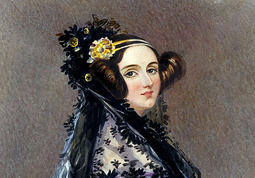
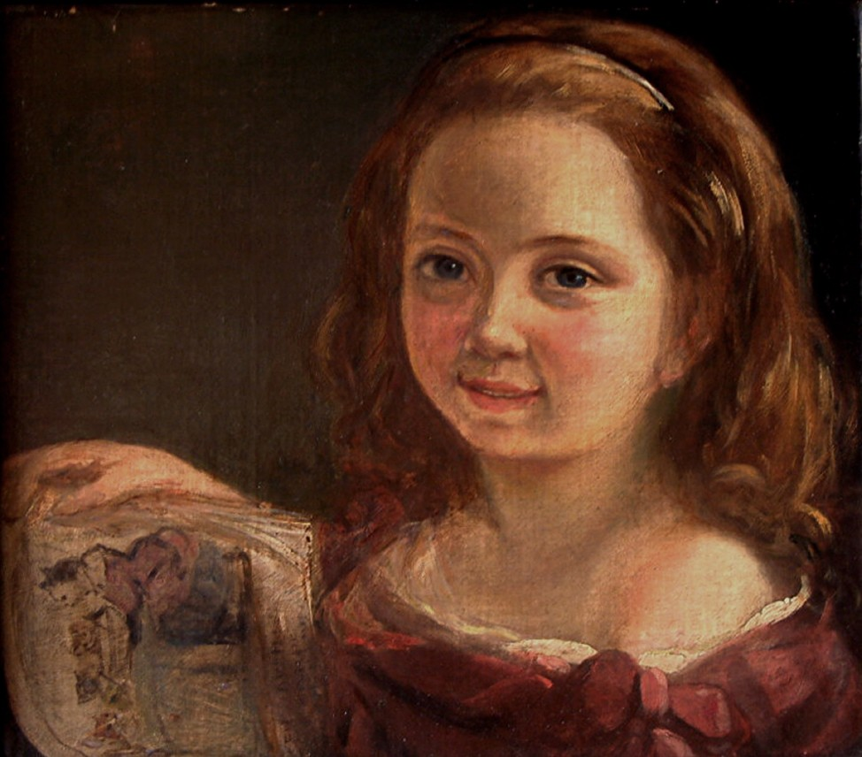

Ada Lovelace
Augusta Ada King, Condessa de Lovelace, nasceu em Londres em 1815 e ficou conhecida por desenvolver um algoritmo destinado a ser processado por uma máquina, tornando-se uma das figuras mais importantes da história da computação.

Infância
Seu pai era o poeta romântico Lord Byron, conhecido por seu comportamento excêntrico. Sua mãe, Annabella Milbanke, era interessada em matemática e investiu em uma educação rigorosa para Ada, especialmente nas áreas de matemática e ciências.
Ada também era fascinada por poesia. Aos doze anos, interessou-se por engenharia mecânica e escreveu um estudo chamado Flyology, no qual imaginava uma máquina capaz de voar.

Juventude
Aos 17 anos, Ada foi apresentada à sociedade londrina e conheceu o matemático Charles Babbage. Ele trabalhava na Máquina Diferencial, projeto criado para realizar cálculos matemáticos de forma mecânica.
Ada compreendeu rapidamente o potencial das invenções de Babbage e passou a acompanhar seu trabalho. A troca intelectual entre os dois se tornou uma parte importante de sua trajetória científica.
Vida adulta
Anos depois, Babbage desenvolveu o projeto da Máquina Analítica, concebida para processar dados e armazenar informações. Ada traduziu para o inglês um artigo sobre a máquina e acrescentou extensas notas próprias ao material.
Nessas anotações, Ada descreveu possibilidades que iam além de cálculos matemáticos. Ela percebeu que números poderiam representar outros tipos de informação, como letras e notas musicais.
Entre suas notas estava uma sequência detalhada de instruções para a Máquina Analítica calcular números de Bernoulli. Esse trabalho é frequentemente associado a um dos primeiros algoritmos publicados para execução por uma máquina.